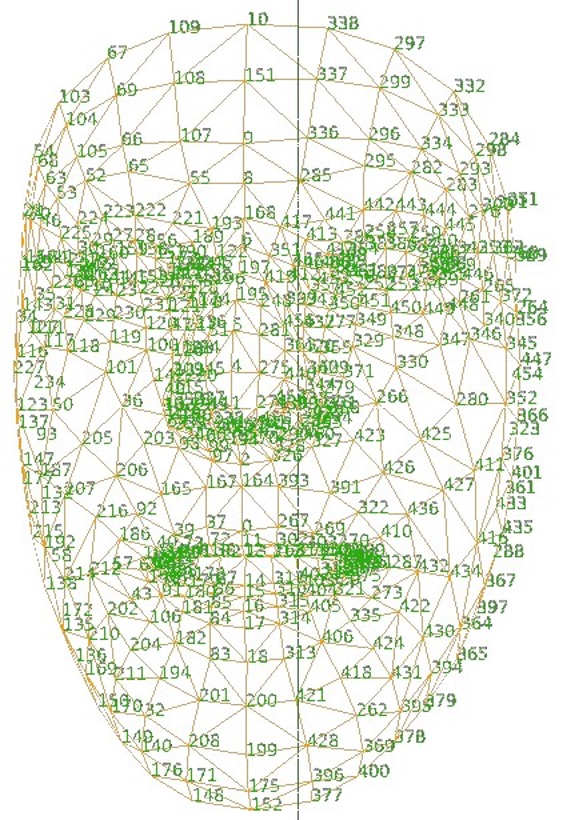

事前機械学習モデル FaceMesh を使う
カメラが捉えた画像内の顔の部位の位置に応じた処理をするp5.jsのスケッチを作成してみましょう。ml5.jsライブラリは、カメラ画像を認識して、人のポーズや顔のパーツの位置を検知するための、事前機械学習モデルを提供しています。
ここでは Facemeshを使ってみます。 ml5.jsは、Googleが開発した機械学習システムTensorFlowを活用して開発されており、自分のスケッチに機械学習機能を組み込み、簡単な「AI」プログラムを作ることを助けるライブラリです。
ml5.jsライブラリを使うために、次のscriptタグをindex.html内に指定します。
<script src="https://unpkg.com/ml5@latest/dist/ml5.min.js"> </script>ネットワークを経由してライブラリを配信する仕組みであるCDN(Contents Delivery Network)のサイトを通じて、ml5.jsライブラリを参照する指定です。
Facemeshの使い方
Facemeshは入力された画像(静止画や動画)から、人の顔の部分の位置を推定する機械学習モデルです。顔の486の位置を推定します。 入力画像内で最大何人の顔を検知するかをパラメータで指定できます。コンピュータに接続されたカメラの入力画像から、人の顔を推定するサンプル(リスト9-1)をもとにFacemeshの使い方を説明します。(1) ビデオ映像の設定
createCapture()関数を使って、コンピュータに接続されたカメラの映像を得るするためのオブジェクトを作成します。createCapture()関数が返すオブジェクトはp5.Elementで、HTMLの <video>タグで作られる要素に対応します。
キャプチャした映像は、image()関数を使ってキャンバスに描画できます。
createCapture()の第1引数では、キャプチャする対象が、画像(VIDEO)か音声(AUDIO)かを指定します。省略すると両方をキャプチャします。
let video;
function setup() {
createCanvas(640, 480); //キャプチャした画像を表示するキャンバス
video = createCapture(VIDEO);
video.size(width, height); //キャプチャする画像の大きさをキャンバスと同じにする
....
video.hide(); //キャプチャされた映像を表示しない
}
キャプチャされた映像は、デフォルトで表示される仕様になっており、それを止めるにはcreateCapture()関数が返すオブジェクトに対してhide()メソッドを実行します。(2) Facemeshの初期化(Facemeshを作る)
setup()関数内で、ml5.facemesh()を使って、Facemeshを作ります。第1引数には入力の映像を、第2引数にはFacemeshが準備できたら呼び出される関数を指定します。
let facemesh;
function setup() {
....
facemesh = ml5.facemesh(video, modelReady);//入力元と準備ができた後に実行される関数
....
}
function modelReady() {
console.log("Model loaded");
}
このサンプルのmodelReady()は、コンソールに初期化の終了を単に表示するだけです。(3) Facemeshにコールバック関数を設定する
人のポーズを検知したら、実行する処理をon()メソッドで指定します。 推定'predict'を認識したらどのような処理をするかをコールバック関数内に定義します。
function setup() {
....
facemesh.on('predict', gotResult);
....
}
(4) コールバック関数の定義コールバック関数の引数は、顔を検知した結果の配列です。リスト9-1のコールバック関数gotResult()内では、引数で渡される推定結果をグローバル変数のpredictionsに代入しています。
let predictions = [];
function gotResult(results){
predictions = results;
}
引数resultsの配列内には、検知した顔の数の連想配列が要素として入っています。それぞれの連想配列には、次のようなキーが含まれます。キーscaledMeshに各部位の座標(カメラ入力画像上での座標)が格納されており、それを使います。
[ { faceInViewConfidence: 値, //信頼度
boundingBox: 値, //顔を囲む矩形
mesh: 値, //192x192ピクセルの画面上での座標
scaledMesh: 値, //入力画像上の画像
annotations: 値 }, //顔のパーツとそれに含まれる座標
{ .... }, { .... },,, ]
連想配列はキーと値をコロンで繋いだセットからなり、そのセットをカンマで区切って並べ、{と}で囲んだ形をしています。
{ キー1: 値1, キー2: 値2, ……}
連想配列の値を取り出すには、ピリオドの後ろにキーを指定する(連想配列.キー、これをドット記法といいます)か、キーを配列のインデックスとして指定します(連想配列["キー"])。
{ キー1: 値1, キー2: 値2, ……}
連想配列の値を取り出すには、ピリオドの後ろにキーを指定する(連想配列.キー、これをドット記法といいます)か、キーを配列のインデックスとして指定します(連想配列["キー"])。
(5) 検知した顔情報
検知した顔の連想配列の例を右に示します。
faceInViewConfidenceは顔が存在する信頼度、 boundingBoxは顔を囲む矩形の左上の座標(topLeft)、右下の座標(bottomRight)を入れた連想配列です。 mesh、scaledMeshは468部位分の座標[x, y, z]の配列です。

scaledMeshの配列のどのインデックスがどの部位(ランドマーク)に対応しているかは、マップされたダイアグラムを参照する必要があります。右に図を示しますが、数字が重なって見にくいので、tensorflow(Face Landmarks Detection)の解説ページを参照してください。インデックスと部位の対応の一部を示します。
0: 上唇の中央上 1: 鼻の高い位置 2: 鼻下 10: 額中央上部 16: 下唇中央上 133: 右目頭 362: 左目頭例えば、一人めの顔の鼻下の位置は次のように得られます。
x座標は、predictions[0].scaledMesh[2][0] y座標は、predictions[0].scaledMesh[2][1]
キーannotationsは、顔の部分を構成する座標をグループ化して、名前をつけた情報です。連想配列のキーが部分の名前になっています。
scaledMeshでは、顔の部位を468個の配列のインデックスで指定しないとなりませんが、annotationsでは部分の名前でアクセスできます。次にannotations内のキーを示します。名前の後ろのカッコ内の数字は その部分を構成する部位(座標)の個数です。
leftCheek (1) leftEyeLower0 (9) leftEyeLower1 (9) leftEyeLower2 (9) leftEyeLower3 (9) leftEyeUpper0 (7) leftEyeUpper1 (7) leftEyeUpper2 (7) leftEyebrowLower (6) leftEyebrowUpper (8) lipsLowerInner (11) lipsLowerOuter (10) lipsUpperInner (11) lipsUpperOuter (11) midwayBetweenEyes (1) noseBottom (1) noseLeftCorner (1) noseRightCorner (1) noseTip (1) rightCheek (1) rightEyeLower0 (9) rightEyeLower1 (9) rightEyeLower2 (9) rightEyeLower3 (9) rightEyeUpper0 (7) rightEyeUpper1 (7) rightEyeUpper2 (7) rightEyebrowLower (6) rightEyebrowUpper (8) silhouette (36)
例えば、一人めの顔の鼻下の位置はannotationsを使うと次のように得られます。
x座標は、predictions[0].annotations.noseBottom[0][0] y座標は、predictions[0].annotations.noseBottom[0][1]
【リスト9-1】
let facemesh;
let video;
let predictions = [];
function setup() {
createCanvas(640, 480); //キャプチャした画像を表示するキャンバス
video = createCapture(VIDEO);
video.size(width, height); //キャプチャする画像の大きさをキャンバスと同じにする
facemesh = ml5.facemesh(video, modelReady); // Facemesh の初期化
facemesh.on('predict', gotResult); // 顔を検知(予測)した時実行される関数を設定
video.hide(); //元のビデオ画像を表示しない
}
function modelReady() {
console.log("Model ready!");
}
function gotResult(results){ // 顔を検知(予測)した時実行される関数を定義
predictions = results; // 検知結果をグローバル変数predictionsに代入
}
function draw() {
image(video, 0, 0, width, height);
drawKeypoints(); //すべてのkeypointを描く
}
function drawKeypoints() { // 検知されたキーポイントに円を描く関数
for (let i = 0; i < predictions.length; i++) {
let keypoints = predictions[i].scaledMesh;
for (let j = 0; j < keypoints.length; j += 1) { // 468のポイントに円を描く
let x = keypoints[j][0];
let y = keypoints[j][1];
fill(255, 0, 255);
ellipse(x, y, 5, 5);
}
}
}
Facemeshを使って遊ぶ
Facemeshで検知された顔の上に、別のグラフィックを描いて、人の動きに応答する画像を作り出すスケッチを作ってみます。 リスト9_2は、検知した顔の上に目と唇を描いたスケッチです。目はscaledMeshの情報を、唇はannotationsの情報を使っています。
【リスト9-2】
let facemesh;
let video;
let predictions = [];
function setup() {
createCanvas(640, 480); //キャプチャした画像を表示するキャンバス
video = createCapture(VIDEO);
video.size(width, height); //キャプチャする画像の大きさをキャンバスと同じにする
facemesh = ml5.facemesh(video, modelReady); // Facemesh の初期化
facemesh.on('predict', gotResult); // 顔を検知(予測)した時実行される関数を設定
video.hide(); //元のビデオ画像を表示しない
}
function modelReady() {
console.log("Model ready!");
}
function gotResult(results) { // 顔を検知(予測)した時実行される関数を定義
predictions = results; // 予測の結果をグローバル変数predictionsに入れる
}
function draw() {
image(video, 0, 0, width, height);
drawEyeMouth(); //目と唇を描く
}
function drawEyeMouth() { // 検知された顔の上に目と唇を描く関数
for (let i = 0; i < predictions.length; i++) {
let keypoints = predictions[i].scaledMesh;
let haba = dist(keypoints[362][0], keypoints[362][1], keypoints[133][0], keypoints[133][1]);
noStroke(); //↑目頭間の距離を計算、目の大きさの調整に使う
fill(255);
ellipse(keypoints[386][0], keypoints[386][1], haba, haba); //左
ellipse(keypoints[159][0], keypoints[159][1], haba, haba); //右
fill(0);
ellipse(keypoints[386][0], keypoints[386][1], haba/2, haba/2); //左
ellipse(keypoints[159][0], keypoints[159][1], haba/2, haba/2); //右
//唇を描く
let lipsLower = predictions[i].annotations.lipsLowerOuter; //下唇外側の10個の点の座標
let lipsUpper = predictions[i].annotations.lipsUpperOuter; //上唇外側の11個の点の座標
noFill();
strokeWeight(10);
stroke(200, 0, 0);
beginShape(); //下唇の曲線を描く
for (let i=0; i<lipsLower.length; i++) { //lipsLower.lengthは下唇に含まれる点の数(10)
curveVertex(lipsLower[i][0], lipsLower[i][1]);
}
endShape();
beginShape(); //上唇の曲線を描く
for (let i=0; i<lipsUpper.length; i++) { //lipsUpper.lengthは下唇に含まれる点の数(11)
curveVertex(lipsUpper[i][0], lipsUpper[i][1]);
}
endShape();
}
}
演習問題
【問題9-1】Facemeshを使い、カメラが捉えた顔の表情(顔のパーツの位置)に応じた処理をするp5.jsのスケッチを、独自のアイディアに基づいて作成してみよう。
一つの例を次に載せます。 喜怒がふる